Design phase · storyboard v6 · revised from your notes on v5
A lake under a blood moon. He stands on a single stone in the water with his reflection beneath him. A path of stepping stones and a lantern walkway crosses the lake to the far shore, where his house stands on land with his weapons on the veranda and his practice targets on the beach. Every section is a scene that shows what the section is about, and every camera move passes layers at different depths, so the parallax is always there.
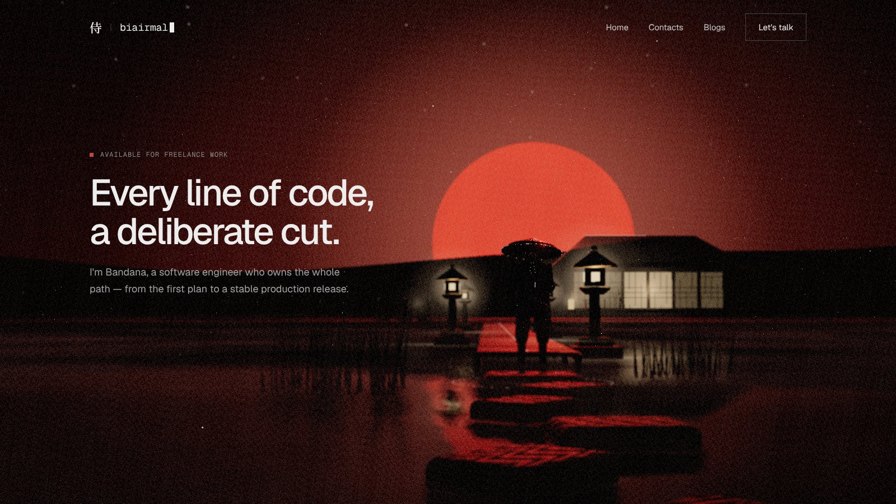
Shot 01 · real-time previz render · placeholder geometry, the ronin from v3
改Your notes → what changed
| You said | v6 |
|---|---|
| Blood moon by default | The moon is red from the first frame. The whole grade is built around it: red sky and water, black silhouettes, warm lanterns as the only other colour. |
| Each scene reflects its section | About shows him, full-figure with his reflection. Work shows four straw targets cut clean through, one per shipped project. Toolkit shows his weapons, one per skill group. |
| Tools are the samurai's | Katana = Backend, wakizashi = Frontend, tantō = Database, yumi (bow) = DevOps & cloud. They sit on a stand on the veranda, silhouetted against glowing paper. |
| A lake setting, house not on the water | The house stands on land on the far shore. The lake is the centre of the world. |
| Samurai reflection on the water | He stands on a low stone just above the water, so his reflection is under him in every shot that sees him. |
| Keep the path in the water | Stepping stones lead out to him, then a plank walkway with four lanterns (Plan, Build, Ship, Sustain) continues across to the far shore. |
| Parallax when the camera moves | The world is built in depth layers: reeds and a pine branch close to the lens, him and the path in the middle, the far shore, then three mountain ridges and the moon. Any camera move slides them past each other (see the pair below). |
層Parallax
Compare the two frames. The reeds and stepping stones jump, he shifts against the moon, the house and lanterns slide less, and the ridges and moon barely move. On the site, every scroll and every pointer move does this, continuously.
Camera at rest
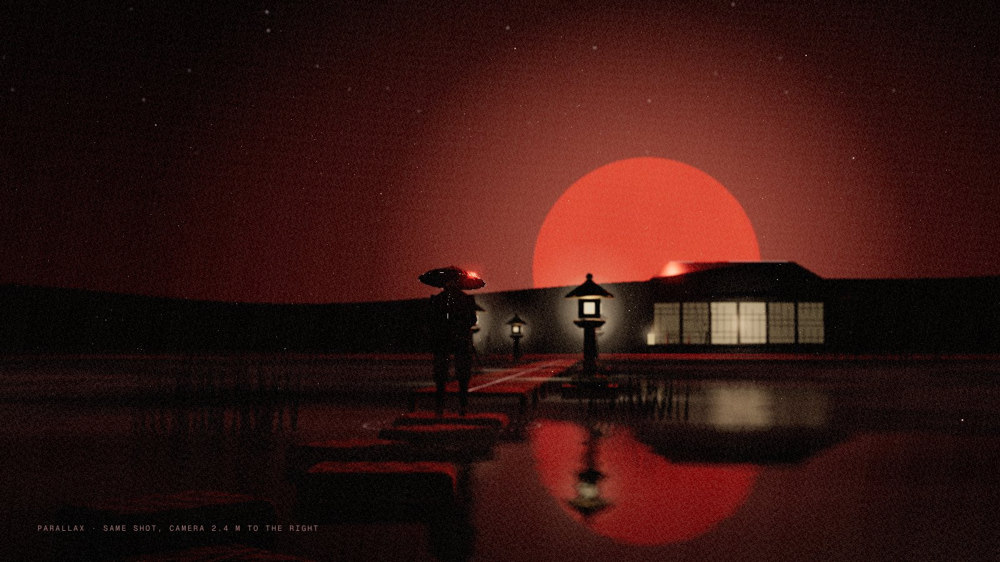
Camera 2.4 m right
| Layer | Distance | What's in it |
|---|---|---|
| Foreground | 1–5 m | Reed clumps on the near shore, the pine's branch and cloud-pads, stepping stones. Blurred by depth of field and moving fastest. |
| Subject | 10–20 m | Him on his stone, his reflection, the lantern walkway. |
| Far shore | 40–50 m | The house, the beach with the targets and the brazier, reeds. |
| Distance | 110–300 m | Three mountain ridges, each lighter than the one in front (aerial perspective), and the moon behind them. |
地The world
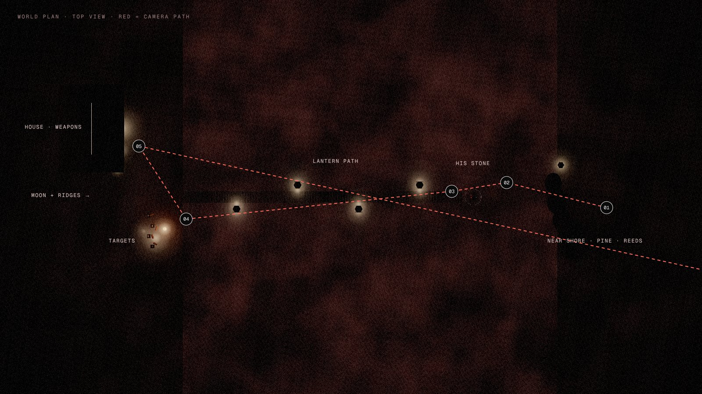
The site keeps its current section order. The camera crosses the lake as you read, then returns to the near shore for Contact, so the film ends where it started.
絵Shots
From the near shore, through the reeds. He stands on his stone in front of the blood moon, reflected in the water, with stepping stones leading out to him. Lanterns and the house glow beyond.
The camera pushes slowly in through the reeds, and they slide past the lens. Mist drifts and the water ripples. He only breathes. The pointer moves the camera sideways a little, for parallax.
One iai on the first scroll: the moon makes it a pure silhouette, which hides animation flaws. Off by default.
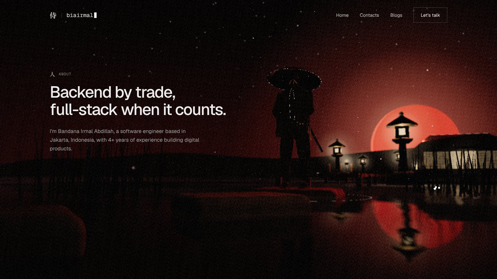
The camera comes down almost to the water, close beside him, and looks up. It's his full figure, with the moon's reflection breaking in the ripples beside him. A portrait of the person the section is about.
A red rim from the moon behind him, and a faint warm fill from the lanterns. The fill is what shows the kasa, the mask and the sword, instead of a flat silhouette.
A slow arc of about 20° while you read. The background slides behind him, which is the parallax.
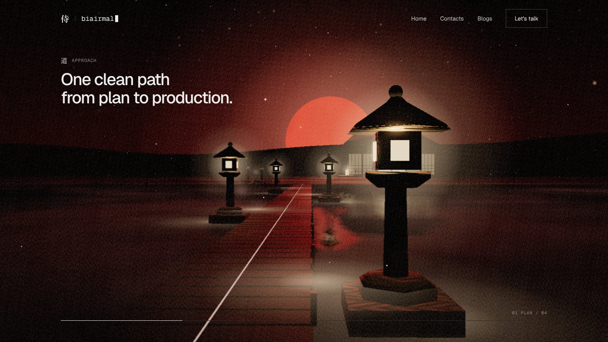
The path from plan to production, literally a path. Four lanterns stand on alternating sides: Plan, Build, Ship, Sustain. The section pins and the camera walks the path. As it passes each lantern, that stage's card rises.
The near lantern sweeps past the lens, the far ones slide slowly, and the moon stays put. It's the clearest sense of travel in the film.
All four lanterns are lit from the start, with glowing windows, a glow and a pool of light on the planks and water. Nothing waits for the camera to come near.
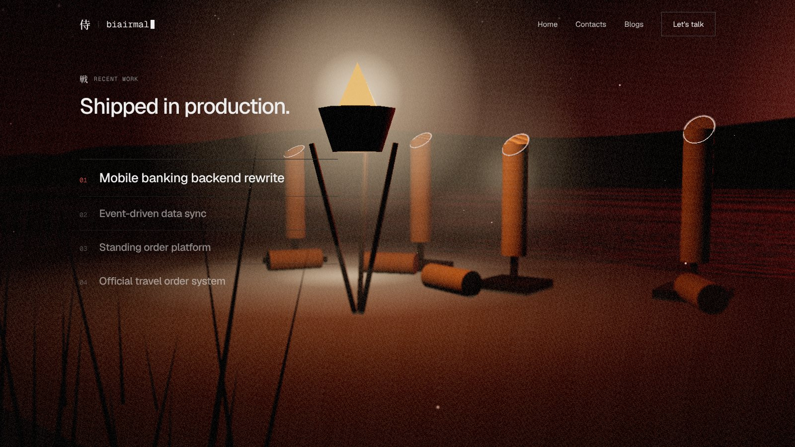
Four rolled-straw targets (tameshigiri) on the beach, each cut through in one diagonal stroke, the top lying on the sand. One target per shipped project: finished work, done cleanly.
Opening a project row brings its target forward. The cut face glows briefly along its edge (the light seam), and the camera eases toward it.
A kagaribi, an iron fire basket on a tripod, lights the targets. It's warm against the red lake, and it explains where the light comes from.
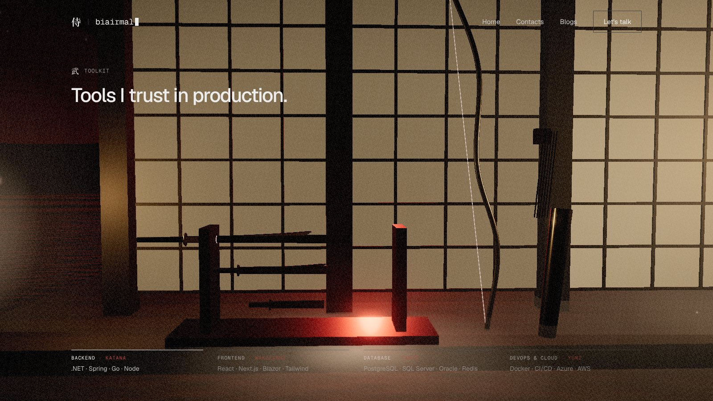
A samurai's tools are his weapons. Katana = Backend, wakizashi = Frontend, tantō = Database, yumi = DevOps & cloud. Each one carries a group of real tools.
The camera tracks along the stand. The weapon in view lifts slightly and its group lights up in the list. The katana slides a hand's width out of its scabbard, and the blade catches the light.
Black lacquer against glowing paper doors gives pure silhouettes, which are easy to read on a phone.
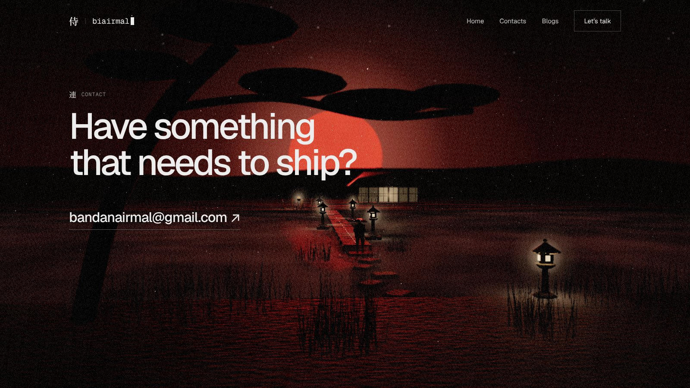
The camera flies back over the water to the near shore and rises under the pine. Its branch frames the whole lake: the walkway, him on his stone, the far shore, the moon.
Hovering the email brightens every lantern along the path, like lighting the way for a visitor.
"Back to top" drops the camera back down through the reeds to the opening frame.
携On phones
A phone held upright sees far less width than a desktop screen, so each shot gets its own camera on phones rather than a squeezed desktop view. The subject sits in the middle band, and the text goes in the empty sky above it or under a dark scrim at the bottom. Both rely on the frame being vertical. Rendered at 390 × 844 (iPhone 14 size).
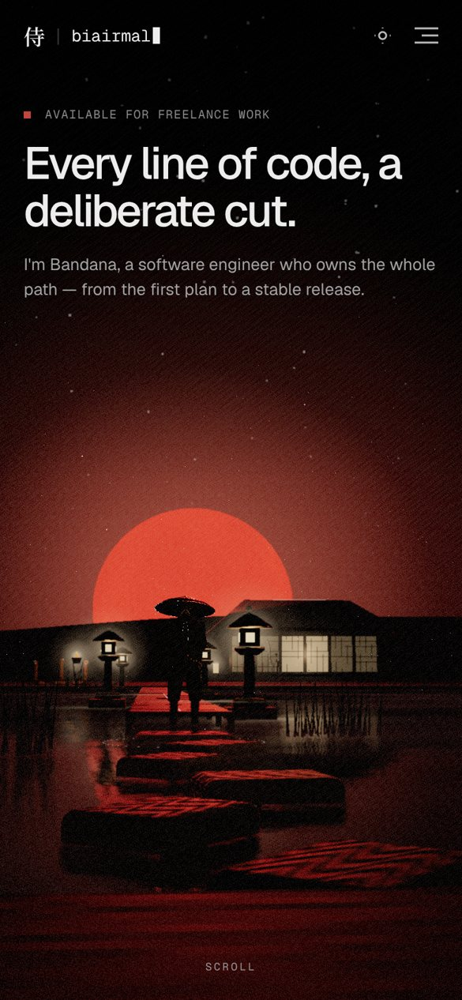
01 Hero
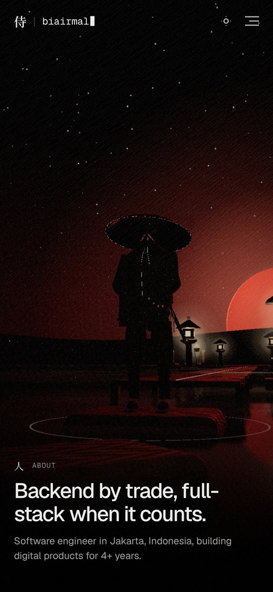
02 About
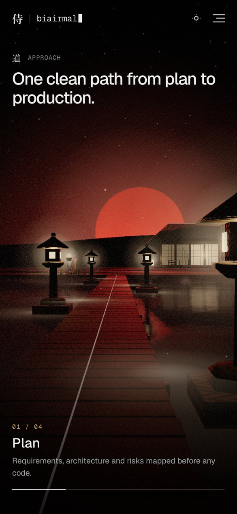
03 Approach
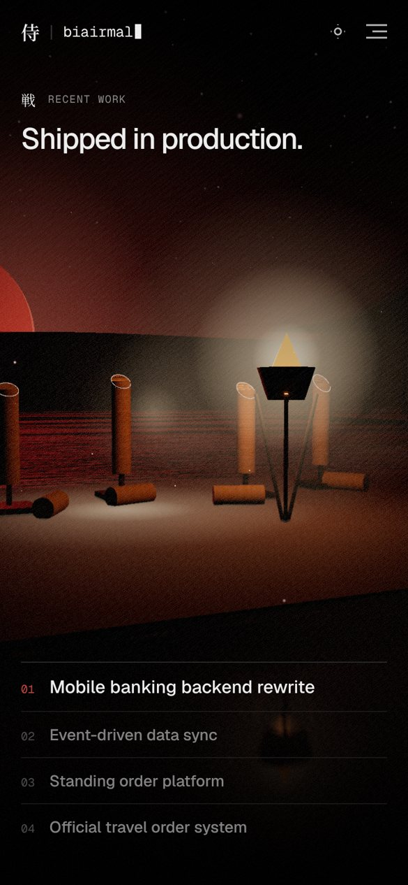
04 Work
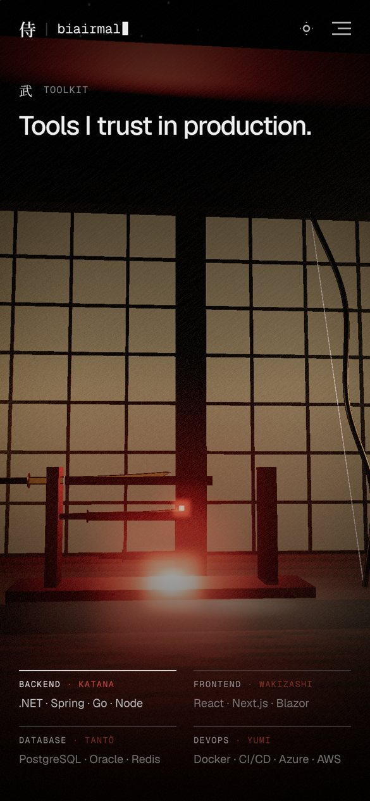
05 Toolkit
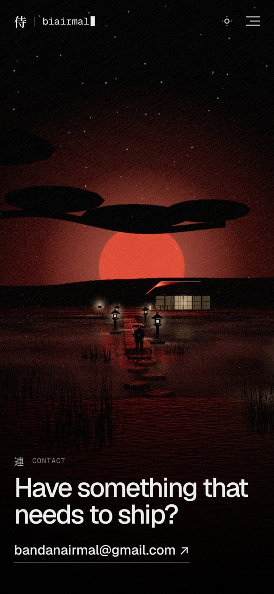
06 Contact
| Shot | Phone framing |
|---|---|
| 01 Hero | A wider lens, tilted up, so he and the moon sit in the lower half. The headline goes in the empty sky above. |
| 02 About | Portrait suits him best: his full height plus his reflection fills the screen. The text sits at the bottom. |
| 03 Approach | The walkway's vanishing point is centred, so the lanterns line the sides. The current stage card sits at the bottom with the progress line. |
| 04 Work | The camera pulls back and moves left so all four targets and the fire fit across the middle. The project list is stacked below. |
| 05 Toolkit | Low and straight on, so the blades and the tall bow stand against the glowing paper. The groups form a 2 × 2 grid. |
| 06 Contact | The pine branch runs across the top, with the lake and moon in the middle. The address stays thumb-reachable at the bottom. |
Phone rendering also keeps the lighter settings from the performance pass: the low-poly model, no post-processing, a cheaper water reflection and resolution that adapts to the frame rate. These previz frames are rendered at full quality to show the framing.
型Rules
| Topic | Rule |
|---|---|
| Samurai | One place (his stone) and one pose (idle breathing) for the whole film. No walking. Cloth springs still move his coat in the wind. |
| Lighting | Red moon key and rim, warm lanterns and fire. Every lamp is glowing material + glow sprite + light pool, identical on every device. Real point lights are a desktop-only extra, and their count never changes. |
| Parallax | Every shot has a foreground layer. The camera always moves a little sideways as well as forward, never straight on, so the layers separate. The pointer adds a little more. |
| Performance | One lake instead of four separate sets. Ridges are flat cut-outs, reeds are one instanced mesh per clump, and the water reflection is reused from v4 with the phone settings. |
問Decisions for you
/experimental with v6, or build it alongside at /experimental/v6?侍 · biairmal storyboard v6 · real-time previz renders (design/previz/scene4.js) · placeholder geometry